|
|
|
|
|
From Kuching, Malaysia to Singapore
Phuket, Thailand 4th December 2008
Good day to you all,
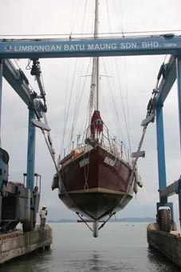 This email is being started from a far higher view point than normal – and far stabler one to boot. The big girl, Hinewai, is sitting proudly, high and dry, in Limbongan Batu Muang, a shipyard in Penang.
Those of you who remember her from her Brighton days would recognize her – floor boards up, tools everywhere, the keel being sanded back. Ahh, just like the good old days – NOT!
To date, we’ve been sitting here for just over two weeks – we’d allowed 2 to 3 weeks to complete all the work – but it hasn’t stopped raining yet. We’ve some welding to do up in the bow, and that hasn’t even started. We’re still hoping to be away in a week or so – time will tell. And who knows when and where this will be finished.
So how have we ended up here? Well, the last email found us in Kuching, still in Sarawak or Malaysian Borneo, ready and waiting for a weather window to head off over to Tioman Island, just off Peninsula Malaysia.
Turtles and disappointing dirty singlets
A day or so later we did leave and as planned, headed down to Pulau Talang Talang Besar, a small island where we had been told you could watch the turtles coming ashore to lay their eggs. That is true, but sadly we weren’t told that we needed a permit to go ashore.
We dropped the anchor early afternoon and a couple of hours later were joined Malin, another yacht we knew from Miri.. They dropped their dinghy into the water, picked us up and off we all went ashore. The beach was covered in turtle tracks, deep scrapes where they’d dragged themselves ashore with their flippers leaving a line of smaller scoops either side.
At the back of the beach was an enclosed area that looked a little like a tree nursery – lines of that thick, almost solid netting, coiled into tubes buried end on – just as if they were there to protect saplings from rabbits. Except there were no saplings.
What there were were turtle eggs. Each morning the rangers go and dig up the eggs laid that night and transfer then into this protected area. If they don’t, there is a real danger that later turtles will accidentally dig the eggs up when they are ready to lay.
Up to that point, it was a grand afternoon, but then we met The Ranger. Hmm, “The Ranger” - two words suggest a chap in a nicely pressed uniform, probably brown. Not this guy. Slumped in an armchair on the veranda of the hut, he could have found a job running a Greasy Spoon anywhere in the world. Unshaven, somewhat rotund in a dirty white singlet.
He opened two bloodshot eyes and raised a slovenly eyebrow. “Where you from?”
“Er, Hi, we’re off a couple of yachts. We’ve….”
“You have permit?” 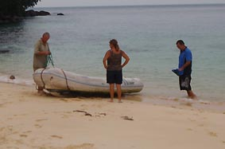
“Er, No. Do we need one?”
“Get off island.”
The eyes and eyebrow lowered. Problem solved as far he was concerned and our questions about where to get a Permit elicited just a grunt of “Kuching”.
Realising we weren’t wanted, we sadly returned to the dinghy. As we headed back to the yachts, we decided to head on for Tioman straight away. Malin chatted it through and said they’d stay for the night and if the weather was OK the next day, might scrub their bottom.
“Ohhh, when’s it going to stop?” and traffic jams
The route to Tioman from Pulau Talang Talang Besar is easy –
basically head north for 20 miles, and then turn left. The
first three or four hours were grand, we even managed to
have enough wind in right 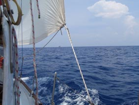
We are so over lightning – it is the scariest thing we’ve had. As soon as you see it, on goes the radar and you start to track the storm cells (while a vivid yellow/blue on the radar screen, they are actually quick a gentle pinky/purple colour on the map screen – it seems Raymarine, who makes our radar, does have a sense of humour).
As usual, the storm cells had formed over the coast and were drifting out to sea. The one behind us was rolling across the anchorage we had just left – and for a while we were relieved we weren’t there. A small cell then formed in front of us so we stopped for a while and let it pass before heading on.
We came around Datu Point and turned left. You sort of follow the coast for about 50 miles and then it drops away south as you head west. About 15 miles down this track, we started to see a big storm cell forming along the coast. It was huge – it seemed to extend as far as we could see, both behind and in front of us.
We had nowhere to go so got the boat battened down and waited.
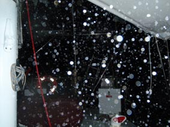 And it was a Hooley. As with many of these thunderstorms, there was the initial 30-35 knot squall front and then it settled into 20 – 25 knots. But it went on and on and on – for over 6 hours we were stuck in it– rain of varying heaviness’s, but the lightning was the worst we’d seen. At times, it was like living in a strobe light, flashes just a second or two apart with a constant roar of thunder. We disconnected all the instruments bar the auto-pilot, packed the oven with the hand-helds and hunkered down below, popping a head through the hatch for a look around every ten minutes or so.
Dawn was never so welcome and we truly thought we’d seen the worst. Ha!
The next couple of days were glorious and we ate up the miles. With one last night before reaching Tioman, we approached one of the main shipping channels for Singapore and faced over 50 contacts on the radar. No traffic separation scheme here – ships were everywhere, all calling each other up on Ch16 to sort out which side they would pass each other. And we had to cross this.
Fortunately, with our radar we can allocate Target Id’s to the various blips. Then we have to try and work out which set of lights is which Target and what they are doing.
“OK, I think that one there is #7 –she’ll pass ahead of us OK.”
“Right, well that one over there is probably #8, she’ll be
going behind us.” 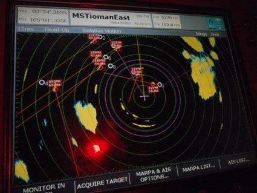
“So that’ll one there will be #9 – now I reckon she’ll turn a bit to pass #2 so she could come quite close. Keep an eye on her.”
While quite challenging, it was actually good fun. We’d taken the precaution of dropping the sails and were motoring in case we need to take any drastic action, but all the big ships show the right lights so you have a fair idea of their direction and angle to you – and if you’re unsure, just aim at the stern.
But while all this was going on, those nasty yellow/blue blobs started to appear on the radar and lightning started to flash around us. Fortunately, we were pretty much out of the main shipping channel as all these numerous storm cells started up.
We’d thought a couple of nights earlier was bad, but it was a walk in the park compared to the rest of this night. While all the storm cells eventually seemed to join into one big blob on the radar, they all thought they were alone. So each had its own little squally front – and they were coming from everywhere. Having just been hit with a 35 knot squall from the north, 10 minutes later another squall came in from the east, or south, or W by WNW. And, of course, bought their own set of waves with them. A confused sea you might say.
And then the grand-pappy of them all came along.
Foolishly, we‘d allowed ourselves to think the worst might be over –while it was still raining hard, we had no big wind for a fair while. Then we heard the wind start to whistle through the rigging. The next thing – bang – we got slammed from the side by the strongest wind we’ve seen, 50kts+, leaning right over even with bare poles. At the same moment, it seemed that we had 100 fire hoses turned on us – the rain wasn’t in drops, it was solid.
The auto-pilot threw a hissy fit and dropped out so Peter had to grab the wheel and hand steer – more by feel than anything – he certainly couldn’t see anything. And for 30 minutes or so, we were pummeled with 40-50 knots and this solid rain. At one point, Jean looked behind us and saw a ship passing us no more than 50 yards away. We just could not have seen it before – and we’re sure they couldn’t have seen us.
Then as the wind dropped a bit, the lightning came back. We’re now aficionados of lightning. Sheet lightning or the type you see running across the face of the clouds is fine – sea strikes are the worry, but again OK if they have a yellow tinge – they are a way off. It’s the pure white light strikes that are the worry.
And these were turning very white and the thunder was cracking, not rumbling. The rain was still so heavy, we couldn’t see anything more than 10 feet from Hinewai, but we could tell the lightning was very very close. And at that moment, the strap holding the two poles to the mast broke, leaving the poles flaying around and smashing into the Granny Bars.
Jean took over the wheel and Peter, securely clipped on, scampered forward to the mast. By that time, there was no gap between the white-out flashes of lightning and the thunderclaps - and these were so loud they could make your ears bleed. With one flash, Peter vividly remembers seeing the bones of his hand. It only took a few minutes to lash the poles back to the mast with the tail of one of the halyards, but it seemed a lifetime for both of us.
In hindsight, we’re not sure if was that clever a thing to do. Had the mast been hit by a lightning bolt while Peter was hanging on to it, well, the result would not have been pretty. On the other hand, if the poles had kept flailing, they would certainly have been wrecked, as would the Granny Bars. And worst case scenario, they could have damaged the rig and lost us the mast.
At last, the lightning started to take that yellow tinge and we realised we were starting to pull away from the worst. Time to switch the chart-plotter back on, confirm our DR position and make a nice cup of tea. The wind dropped to a nice 20 knots although the rain was still so heavy it was blanking our both radar and Mark 1 Eyeball visibility.
Then suddenly, out of the rain we saw a looming great green bow of a substantial ship – easily close enough to read her name “Golden Jane”. We both leapt for the wheel, coming hard a-starboard to pass down her port side. While she probably wasn’t as close as she seemed, she was still way too close, but it did show that even wet, cold and tired, we were keeping a good look-out.
Finally, out of the dawn light, we started to make out the island of Tioman. We shot up the east coast, stalled for a bit with a counter current around the north end, then worked our way south down the west. Around lunchtime, we spotted the masts of other yachts in the marina we had worked so hard to get to.
Tioman Island – a welcome break
We weren’t surprised when we had no response to our calls to
the Marina on the radio. It’s rare that anyone seems to
listen so we readied all the lines and fenders, and just
headed in. As we motored towards the arms, trying to work
out where we could go, we spotted a couple of other yachties 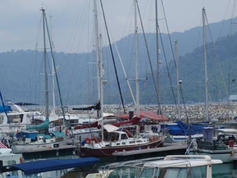
We were shattered and once the yacht was squared away, both
grabbed a couple of hours sleep. That night, one of the
other boats was having a party so we toddled along. Now,
when we say boat, this was a 70ft catamaran, seemingly wider
than we are long. And with free food and booze. We
arrived, grabbed a drink and a plate of food and stood there
swaying, trying to hold a half reasonable conversation.
And, sadly, after an hour realized we were just too tired so
headed back and slept for 12 hours. Life can be so cruel
sometimes. 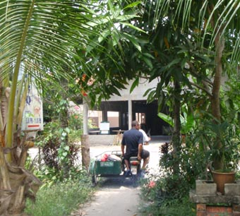
We had a glorious few days in Tioman. Within the marina, we
met up with a couple of boats who’s been up in Borneo, and
made new friends within the transient community of
yachties. There was the usual half day of officialdom and
another half day of tracking down fuel (delivered in
jerry-cans in a side-car of a bike – Peter riding pillion,
Jean sensibly declining the offer to ride in t 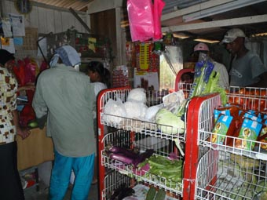
The days were spent exploring and the nights trying out various local eateries, bar one night when we felt like a Western food fix and headed off to one of the resorts. The food was pretty average and the ambiance somewhat spoilt by the karaoke efforts of some Japanese company on its works outing.
On to Singapore
We signed out of Malaysia in Tioman, en-route for
Singapore. We had a good trip, albeit mainly motor-sailing,
stopping off and anchoring each night.
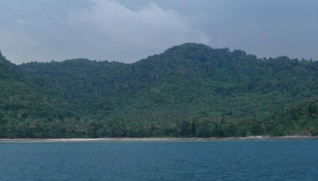
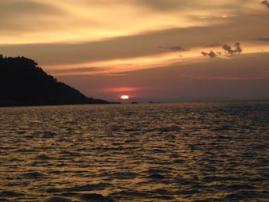 The second day we had a sterling run – great wind, good direction. We had three possible anchorages plotted and swept past the first two, ending up in the third, albeit it a more exposed open bay, well within striking distance of Singapore the next day.
As ever, nature put on a show, with a humungous storm developing a little north of us, heading out to sea about two miles away, and then heading south. And it totally missed us, though the cloud above us was swirling around, forming little dropping tornados which, thankfully, never got close to coming down to sea level. But absolutely beautiful as they were lit by the setting sun.
Singapore – are there really this many ships in the world?
We headed off while it was still dark and were coming down a very narrow passage between Teluk Penyusop and the small islands of Geruda, Besar and Lima into Singapore waters as the sun came up. And all we could see was ships at anchor. Miles and miles of them. And off shore, a conveyer belt of ships motoring their way up and down the channels within the traffic separation scheme.
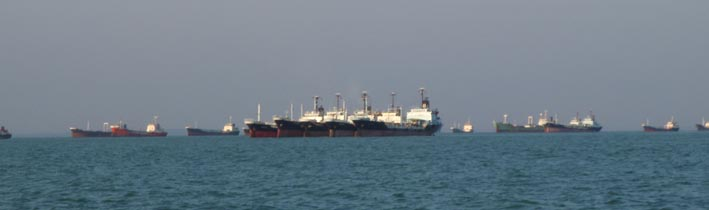 It took us about 5 hours to work our way down to the Quarantine Anchorage off the Twin Sisters Islands – keeping the anchorages to our right and the shipping channels to the left. When working our route out on the charts, we’d planned it to be inside a “neutral” area – between each, but in neither. In hindsight, we’d have been better off working through the anchorages – a technique we adopted later – because we had ferries taking shortcuts and big ships easing down ready to turn down one of the channels into an anchorage or into the docks. A bit like you do when exiting a motorway.
There are a number of places that visiting yachts can stop in the areas. One very popular place is Sebana Cove – it’s cheap, has reasonable facilities, but it’s still in Malaysia, being up a river to the east of Singapore. It’s a bit of a pain to get to Singapore – ferry, bus etc. North of Singapore there are a few anchorages near Johor Bahru, but being up the western side it’s a bit of a passage all the way round Singapore.
Within Singapore itself, there’s a choice of 3 marinas. Raffles is round to the west so is a long trip when coming from the east as we were and it's getting a reputation of getting abit seedy. It also has a reputation of being expensive. OneDegreeFifteen is a beautiful marina with great facilities, but it’s stuck on Sentosa Island and has hassles with transport into the city.
We chose to go to Keppel Bay Marina, the newest of the
marinas.
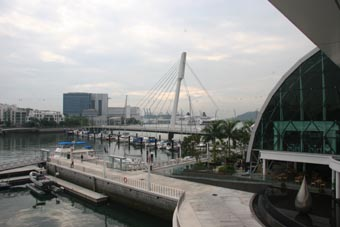
You come into the Quarantine Anchorage and call up the officials on Channel 74. While it’s called an anchorage, that’s really only for the big ships – as a yacht, you just motor around near the CQIS station which is based on a beautiful couple of small islands. Pretty quickly, the officials come out in a fair sized boat, coming close in to collect your documents – Boat Registration Papers, Crew List, Passports. Husbands also have to sign a declaration that their wives will be leaving with them.
From here, it’s a short run to Keppel Bay Marina, still in the middle of some major development, (some of the building on the plan are awesome), but that offers all facilities and is close to some good shops – and even better, is two only stops on the MRT to the city centre.
Singapore – Shopping and Sim Lim
Both of us have spent a fair time in Singapore over the years and have pretty much seen all the sights and this was planned to be a quick visit to just get a few things for the yacht – AND to get our SLR camera fixed – it had decided on the way to stop working in Kuching.
But, as it turned out, it was also a very enjoyable social visit as well.
The first job of the day was to get down to Canon with the camera. This was an easy 10 minute walk from the marina – and a super efficient system. You just turn up in this room, take a number then get called to a consultant’s cubicle. You explain the problem; they come back with a possible list of what may be wrong and what each might cost. You leave the camera with them and they call you when it’s fixed.
From Canon, it was another 5 minute walk to the MRT and we hopped a train into Little India. We found a surprisingly well stocked chandlery and were able to get most of the odds and ends we needed there, but still had to go to the Sim Lim Tower for some camera and computer bits.
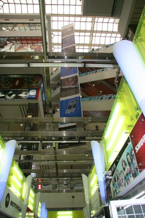 Sim Lim Tower has to be seen to be believed – seven floors of small shops/stores/stalls on all 4 sides of a central atrium. It’s a place where genuine bargains can be found, but where Caveat Emptor most certainly applies. So we decided to split the trip into two – reconnaissance and attack.
The main item on the shopping list was a new zoom lens and some filters for the camera – Jean knew exactly what she wanted and had the comparative prices to hand.
At first, as we worked our way up the floors checking every store with lens, it looked great – there were some seriously competitive prices were being quoted. Then the attempts to buy started – and Oh, how things changed. They must have tried every scam on us – from “Oh, we misunderstood what you wanted” to “Oh, that price doesn’t include a warrantee” (the most common) to ridiculously priced filters “Ah, well, the price for the lens is only good if you buy the filters”. In the end, there was no real cost benefit in getting a lens there – we might as well get one from a reputable place in Oz.
However, we had more luck with the computer gear – a few new memory sticks, external drives and, most important, a cooling fan pad (the poor old laptops has been overheating and switching itself off to regularly lately) – all at much better prices than Oz.
Singapore – Old Friends, New Friends
The Sim Lim experience was spread over a couple of days – and on the second we arranged to meet up with American Tom from Optimum Trust, who we’d first met in Bali and who had headed on to Singapore, after we had said our goodbyes in Kumai. From now on, we’d be bumping into Tom either in person or over the radio all the way to Phuket.
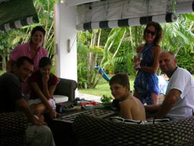
And finally, but not least, we also had the chance to meet
up with John Ramsey, or he with the call sign FTJR of the
Raw Prawns Squadron in Aces High.
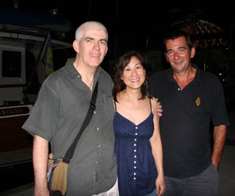
At last, having met up with friends old and new, and with our new purchases working away for us, it was time to leave Singapore.
Until the next note
And here, dear reader, we will leave you for a while. We have fallen so far behind with our emails that we could be another few days writing about the trip up the Malacca Straights, our five weeks and a half in that Penang shipyard (so much for the planned 2 or 3), and then the trip on north, leaving Malaysia in Langkawi and entering Thailand here in Phuket.
We are sitting at anchor at the moment off the Kata Beach resort and once we’ve sorted through some pictures to send with this, we’ll pop ashore and see if we can get onto their Wi-Fi. Somehow, this will be sent today.
All our love
Peter & Jean
Next Log Page: From Singapore to Langkawi
|
|
|
|
|
|
|
|
The Crew The Route The Yacht The Log Guestbook Links Contact Us |
|
|
|
|
|
Home |
|
|
All Original Content of this Web Site Copyright © 2000, 2001, 2002, 2003, 2004, 2005, 2006, 2007, 2008, 2009 Ocean Odyssey Pty Ltd |
 Singapore, we received an
email from another Old Albanian, Chris Sykes, who was living
over in Singapore, working for one of the banks. Pure
chance he’d seen the article and dropped the email,
suggesting it might be nice to meet. So we did, he and his
wife, Jules, coming down to the Marina one night and
inviting us for a day up at their house. It was a glorious
time, he has three wonderful kids who kept us well occupied,
Jean enjoyed the swimming pool and made a new friend.
Even Peter was seen
playing touch rugby. It was a memorable day.
Singapore, we received an
email from another Old Albanian, Chris Sykes, who was living
over in Singapore, working for one of the banks. Pure
chance he’d seen the article and dropped the email,
suggesting it might be nice to meet. So we did, he and his
wife, Jules, coming down to the Marina one night and
inviting us for a day up at their house. It was a glorious
time, he has three wonderful kids who kept us well occupied,
Jean enjoyed the swimming pool and made a new friend.
Even Peter was seen
playing touch rugby. It was a memorable day.